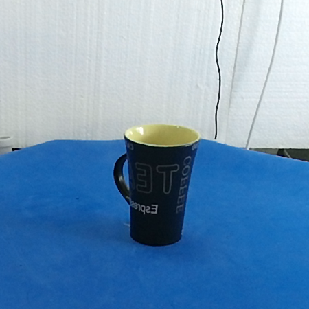

Multi-sensor 3D Object Dataset
for Object Recognition and Pose Estimation
In this work, we propose a new dataset for 3D object recognition using the new high-resolution Kinect V2 sensor and some other traditional low cost devices like PrimeSense Carmine. Since most existing datasets for 3D object recognition lack some features like 3D pose information about objects in the scene, per-pixel segmentation or level of occlusion, we propose a new one combining all this information in a single dataset that can be used to validate existing and new 3D object recognition algorithms. Moreover, with the advent of the new Kinect V2 sensor we are able to provide high-resolution data for RGB and depth information using a single sensor, whereas other datasets had to combine multiple sensors. In addition, we will also provide segmentation and semantic labels about the different parts of the objects so that the dataset could be used for testing robot grasping and scene labeling systems as well as for object recognition.


This novel dataset features:
- 30 objects
- Color and depth maps
- 360 registered clouds
- Reconstructed meshes
- Segmentation masks
- ...
The full dataset can be downloaded here: full dataset (10.5 GiB ZIP file) .

In addition, we provide separated download links for each object of the training set:
- air_freshener (399 MiB ZIP file)
- banana (372 MiB ZIP file)
- blue_vase (369 MiB ZIP file)
- big_dice (366 MiB ZIP file)
- chocolate_syrup (373 MiB ZIP file)
- cocacola (372 MiB ZIP file)
- coffee_cup_1 (372 MiB ZIP file)
- coffee_cup_2 (366 MiB ZIP file)
- colacao (431 MiB ZIP file)
- danone_yogurt (364 MiB ZIP file)
- hand_cream (359 MiB ZIP file)
- honey_pot (378 MiB ZIP file)
- medicine_1 (355 MiB ZIP file)
- medicine_2 (365 MiB ZIP file)
- medicine_3 (375 MiB ZIP file)
- medicine_4 (378 MiB ZIP file)
- medicine_5 (372 MiB ZIP file)
- medicine_6 (371 MiB ZIP file)
- milk (435 MiB ZIP file)
- plant (430 MiB ZIP file)
- plastic_knife (346 MiB ZIP file)
- plastic_plate (368 MiB ZIP file)
- saccharine (371 MiB ZIP file)
- taz (431 MiB ZIP file)
- tea_package (401 MiB ZIP file)
- telephone (456 MiB ZIP file)
- toilet_paper (408 MiB ZIP file)
- wireless_telephone (360 MiB ZIP file)
- background without objects (98 MiB ZIP file)
The validation scenes can be found here: validation scenes (xx.xx MiB ZIP file) .
This dataset was used for the paper was submitted to the Journal of Real-Time Image Processing. At this moment, the paper is under review. A video was also recorded to demonstrate the system running on the Jetson TK1:
In addition, all the tools developed to create this dataset are available under an open-source license in the following GitHub repository: dataset creator